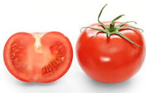

Del camp al supermercat

JOVECO neix amb la idea de modernitzar un negoci agrícola tradicional i convertir-lo en un supermercat més proper, organitzat i digital.
Qui som?
JOVECO és un projecte basat en productes de proximitat, fruita i verdura de temporada i una gestió més moderna del supermercat.
L’objectiu és combinar la venda física amb una part digital, millorant la gestió dels productes, l’estoc i les comandes.
Productes destacats
Aquests són alguns productes destacats de JOVECO.
| Producte | Imatge | Origen | Descripció |
|---|---|---|---|
| Poma Golden |  |
Girona | Poma dolça i cruixent, ideal com a producte de temporada. |
| Tomàquet de proximitat |  |
Baix Empordà | Tomàquet fresc seleccionat per oferir qualitat i bon sabor. |
| Oli d’oliva | Catalunya | Oli d’oliva de qualitat pensat com a producte premium. |
Consulta de producte
Selecciona un producte per consultar la informació guardada a la base de dades.